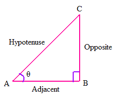
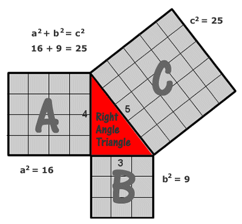
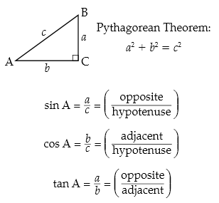
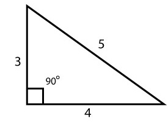

Pythagoras of Samos
Pythagoras of Samos
-
Triangles:
The Pythagoras Theorem states that in a right-angled triangle, the square of the hypotenuse (the side opposite the right angle) is equal to the sum of the squares of the other two sides. This is shown as A2+B2=C2. Pythagoras also figured out the concepts of square numbers, square roots, and the golden ratio.
 -
A2+B2=C2:
A2+B2=C2 is depicted by the picture below. In a right angle triangle, with side lengths of 3,4,5 the Pythagoras Theorem is confirmed. The side of A2 is 4 and 4 squared is 16. By adding the squared lengths of sides A and B you can find side length C by taking the square root of your answer. If you know any 2 of the side lengths, you can use the equation to find the missing side length. This will give you the answer to any right angle triangle.
 -
Trigonometry:
While trigonometry was not invented by Pythagoras, his contributions led to the discovery of trigonometry a few hundred years later. The contributions helped mathematicians notice that there were many connections between side lengths and angles in triangles. For example, C is a 90 degree angle as indicated by the little square in the corner while angle A is 30 degrees and B is 60 degrees in a 30,60,90 triangle. Triangles have sides with different names which help us plug them into the equations below. The hypotenuse is side length c as it is the longest side length. The opposite side is opposite of the angle. Angle A is opposite of side length a. The same goes for side b and angle B. Because of the Pythagoras Theorem we are able to do trigonometry today.
 -
Pythagorean Triples:
Pythagoras was fascinated with numbers. He was also clever enough to realize that right triangles are set in ratios. For example, a right 90 degree triangle can have integers for side lengths of 3,4,5. A “primitive” Pythagorean triple is the side lengths of 3,4,5 because those integer lengths are reduced where 6,8,10 side lengths are just multiples of the “primitive” version. Other examples of triples are (5, 12 13), (6, 8, 10), (7, 24, 25), (8, 15, 17), (9, 40, 41). There are an infinite number of triples because multiples of these numbers are infinite.
